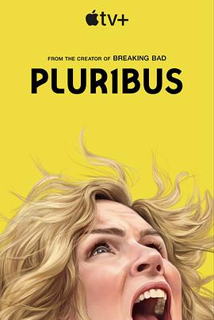

8.7
同乐者 第一季
Pluribus Season 1
2025
美国
评分 8.7
导演:
文斯·吉里根 / 拜伦·霍华德
演员:
蕾亚·塞洪 / 莫奈·洛特 / 莫妮克·洛特 / 卡罗利娜·维德拉 / 米利亚姆·肖尔 / 麦肯齐·斯科特 / 帕里斯·梅斯
类型:
剧情,奇幻
剧情简介
在一个看似理想的地球，人类突然迎来了“联结”——一种神秘病毒将绝大多数人转变为永远欢愉、忠诚于集体意识的“合众者”。而在这场全球性变革中，小说家卡罗尔·斯图卡（Carol Sturka）却成为为数不多的“免疫者”之一。她是一位对自己作品、对世界都充满倦意与怀疑的女性，她不理解为何身边每一个人都变得如此简单、快乐、顺从。卡罗尔在新墨西哥州阿尔伯克基的深夜回程中目睹病变蔓延：酒吧客人突然浓笑、服务员停下动作、街道人潮停滞。她带着她的经纪人兼伴侣海伦躲进医院，却看见病人眼中的同样名字如直播标语闪现：“Carol”。当她意识到自己与十一位其他免疫者被当作异数、被全球追踪、被这场“幸福革命”所利用时，她的反抗之火点亮。她不再甘于旁观幸福，而要找回人类的“自由意志”与“孤独感”。她走访其他幸存者，在欧洲瑞士小镇相聚，却发现有人已投降，有人却暗藏野心。本季九集，导演以冷暖光交错的镜头、沉默却充满张力的构图，展示一个反乌托邦般的世界：人们早晨醒来只是微笑，不再争吵、讨厌、爱恨。卡罗尔却叼着烟，皱眉思考，“为什么我仍然感到痛苦？”影片独特地反转我们对“幸福”的渴望：当幸福成为强制，人类失去了什么？当每个人都通体喜悦，孤独、误解、努力又何在？在卡罗尔的视角下，这个世界不是救赎，而是囚笼。她一步步深入“合众者”的中心，揭开隐藏在笑容背后的代价，也揭露了自己无法逃离的内心荒漠。